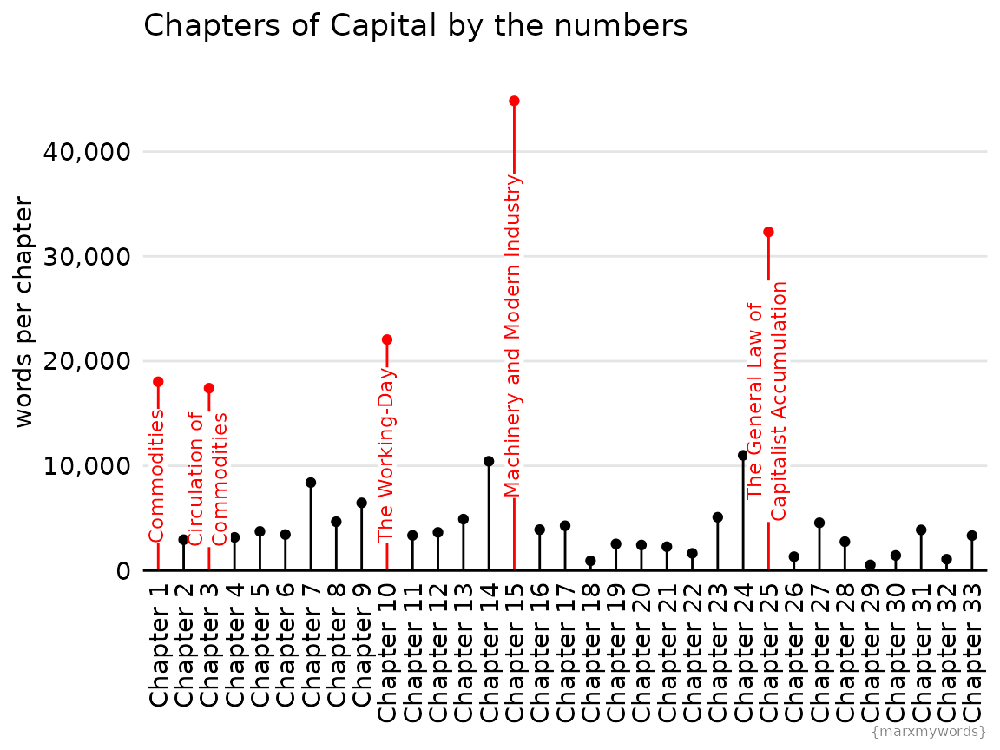
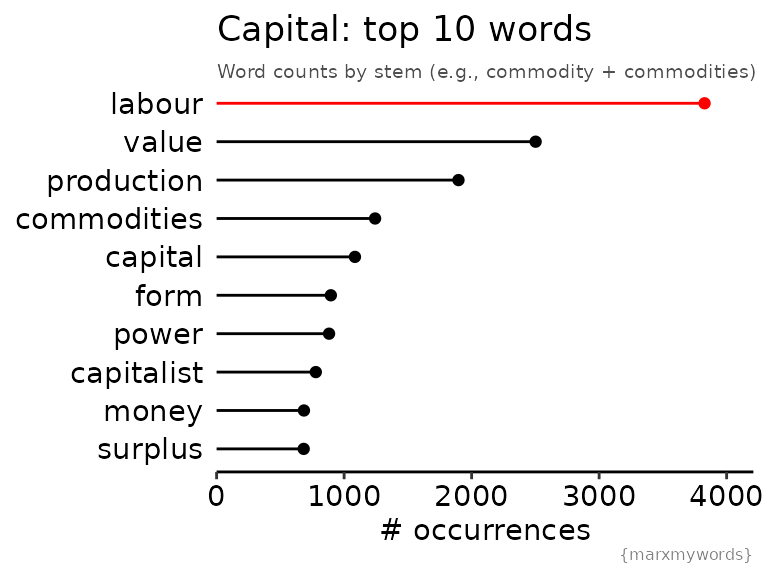
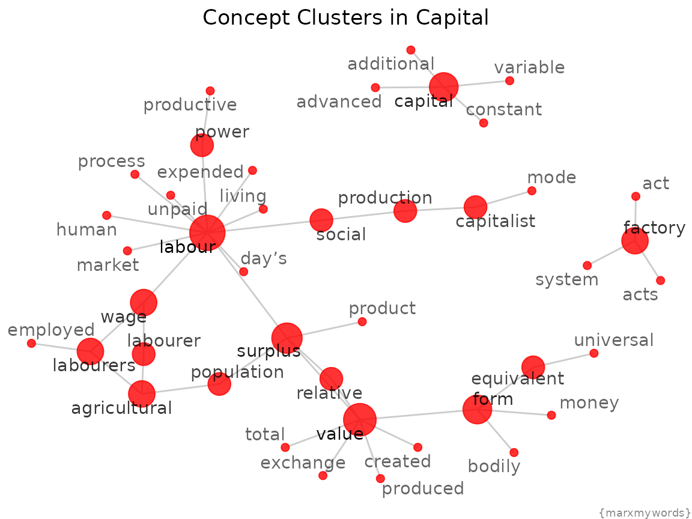
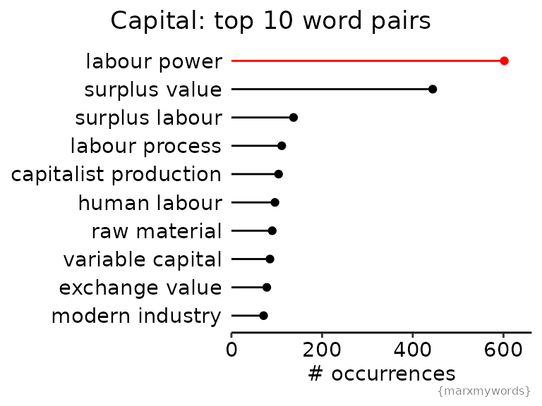

Word Frequencies in Capital
capital_word_frequencies.RmdWhat words come to mind when you think of Capital? Labour, surplus value, linens and coats? Can we learn anything new from Capital, or distill its contents better, by looking at word frequencies? In this analysis, I’ll show some example analyses of Capital using the tidytext framework.
library(marxmywords)
library(dplyr)
library(tidyr)
library(tidytext)
library(SnowballC)
library(ggplot2)
library(ggtext)
library(scales)
library(igraph)
library(ggraph)
theme_marx <- function() {
theme_classic() %+replace%
theme(
strip.background = element_rect(fill = "white", color = NA),
axis.text = element_text(color = "black"),
plot.caption = element_text(color = "grey50", hjust = 1, size = 6),
plot.subtitle = element_text(size = 7.3, color = "grey30", hjust = 0),
axis.line.y = element_blank(),
panel.background = element_rect(color = NA)
)
}
pretty_chapter_names <- function(v){
fct <- paste("Chapter", 1:33)
factor(paste("Chapter", v), levels = fct)
}Pre-processing Methods
{marxmywords} provides the text for Capital in a data frame, with columns indicating the section, part and chapter corresponding to the text in the “text” column. The data frame has one row per paragraph line break, according to the HTML markup at the Marxists Internet Archive. For more documentation about the structure and source of this data set, see help(capital_vol1).
For this analysis, I used only the body of the text, so first let’s filter for those lines of text. (I’ll look at the footnotes in a later analysis.)
capital_main <- capital_vol1 %>%
filter(section == "body") %>%
# handle some annoying common cases not handled well by tokenization tools
mutate(
text = gsub("co-operat", "cooperat", text, ignore.case = T),
text = gsub("C-M-C", "CMC", text, ignore.case = T),
text = gsub("M-C-M", "MCM", text, ignore.case = T)
)
head(capital_main) %>%
tibble()
#> # A tibble: 6 × 4
#> section part chapter text
#> <chr> <int> <int> <chr>
#> 1 body 1 1 "Part I: Commodities and Money"
#> 2 body 1 1 "Chapter One: Commodities"
#> 3 body 1 1 "SECTION 1"
#> 4 body 1 1 "THE TWO FACTORS OF A COMMODITY:\n USE-VALUE AND VALUE\…
#> 5 body 1 1 " "
#> 6 body 1 1 " The wealth of those societies in which the capitalist…Stop Words
Stop words are common words like “the” and “an” that aren’t so insightful to include in some analyses. Tidytext’s stop_words data frame includes stop words from three lexicons. I opted to use only the words in the “snowball” and “onix” lexicon (468 words total). The SMART lexicon includes words like “value” that are rather crucial for this particular text.
Set up (tokenized) tidytext data frames
To look at word frequencies, we first have to split the the text into useful individual units, or tokens, of text. For this, we will use tidytext::unnest_tokens() to split the text into individual words and into bigrams (neighbouring pairs of words).
I’ve also added a column for word stems; this will allow us to group “commodities” and “commodity” and other stem-sharing words later on.
capital_tokenized <- capital_main %>%
unnest_tokens(word, text) %>%
mutate(stem = wordStem(word)) %>%
# remove numeric tokens (references, dates, etc)
filter(!grepl("[0-9]+", word))
capital_unstopped <- capital_tokenized %>%
anti_join(stop_words, by = "word")
capital_bigrams <- capital_main %>%
unnest_tokens(bigram, text, token = "ngrams", n = 2) %>%
separate(bigram, c("word1", "word2"), sep = " ") %>%
filter(
# remove stop words
!word1 %in% stop_words$word & !word2 %in% stop_words$word,
# remove numeric (they're kinda boring, but "12 hours" is pretty common)
!grepl("[0-9]", word1) & !grepl("[0-9]", word2)
) %>%
drop_na()Analysis
Chapters by word count
There’s a lot of variability in chapter length! Chapter 15 is nearly 45,000 words long while Chapter 29 is just 541 words.
# I'm including stop words in this wordcount since I think that gives a more
# informative "denominator", i.e. "frequency per N words" instead of "frequency
# per N non-stop words"
word_counts_per_chapter <- capital_tokenized %>%
group_by(chapter) %>%
summarize(wordcount = n())
word_counts_per_chapter %>%
# annotate the longest chapters
mutate(
annotate_chapters = case_when(
chapter == 1 ~ "Commodities",
chapter == 3 ~ "Circulation of<br>Commodities",
chapter == 10 ~ "The Working-Day",
chapter == 15 ~ "Machinery and Modern Industry",
chapter == 25 ~ "The General Law of<br>Capitalist Accumulation",
TRUE ~ NA_character_
)
) %>%
mutate(
chapter_pretty = pretty_chapter_names(chapter),
color_flag = is.na(annotate_chapters)
) %>%
ggplot() +
aes(x = chapter_pretty, y = wordcount, color = color_flag) +
geom_point() +
geom_segment(
aes(xend = chapter_pretty, yend = 0)
) +
ggtext::geom_richtext(
aes(y = wordcount/2, label = annotate_chapters),
fill = "white",
label.size = NA,
label.padding = unit(0, units = "cm"),
size = 3.1,
angle = 90
) +
scale_color_manual(values = c( "red", "black")) +
scale_y_continuous(
expand = c(0, 0, 0.1, 0.1),
label = comma
) +
theme_marx() +
theme(
legend.position = "none",
axis.text.x = element_text(angle = 90, vjust = 0.5, hjust = 1),
axis.title.x = element_blank(),
axis.ticks = element_blank(),
panel.grid.major.y = element_line(color = "grey90")
) +
ylab("words per chapter") +
labs(
title = "Chapters of Capital by the numbers",
caption = "{marxmywords}"
)
Most common words
Let’s try answer the question posed at the top of the analysis: do the words that come to mind when you think of Capital actually rank as the most common words? Here, we will count word frequencies by word stem, which allows us to group together “labourer” and “labourers” and similar pairs. For display purposes, I’ll show the most common word associated with each stem.
subt <- "Word counts by stem (e.g., commodity + commodities)"
counts_by_stem <- capital_unstopped %>%
# sum up counts across each word
group_by(word, stem) %>%
tally() %>%
# sum up counts across words with the same stem
ungroup() %>%
group_by(stem) %>%
mutate(stem_n = sum(n)) %>%
# take the most common word for that stem for our example
slice(which.max(n)) %>%
ungroup()
top_10_words <- counts_by_stem %>%
arrange(desc(stem_n)) %>%
slice(1:10) %>%
mutate(word = reorder(word, stem_n))
top_10_words %>%
ggplot() +
aes(x = stem_n, y = word, colour = word) +
geom_point() +
geom_segment(
aes(xend = 0, yend = word)
) +
scale_color_manual(
values = c(rep("black", 9), "red")
) +
theme_marx() +
theme(
legend.position = "none",
axis.ticks.y = element_blank(),
axis.line.y = element_blank(),
axis.title.y = element_blank()
) +
scale_x_continuous(
expand = c(0, 0, 0.1, 0.1)
) +
xlab("# occurrences") +
labs(
title = "Capital: top 10 words",
subtitle = subt,
caption = "{marxmywords}"
)
The top ten words are… pretty much exactly what we might expect! Labour rises to the top, its fair due given that it is the source of all capital.
The frequency of the words “value” and “form” are interesting. On their own, they don’t have too much meaning, but Marx uses them extensively in partnership with other terms: surplus value, exchange value, money form, equivalent form, value form. What can we learn by looking at word pairs?
Most common word pairs
Let’s look at which words occur most commonly in sequence.
top_n_bigrams <- capital_bigrams %>%
group_by(word1, word2) %>%
tally() %>%
ungroup() %>%
arrange(desc(n)) %>%
slice(1:55)
# take only combinations where words occur more than once
table_bigram <- table(c(top_n_bigrams$word1, top_n_bigrams$word2)) %>%
stack() %>%
select(word = ind, pairs = values)
just_once_words <- table_bigram$word[table_bigram$pairs == 1]
word_graph <- top_n_bigrams %>%
filter(!(word1 %in% just_once_words & word2 %in%just_once_words)) %>%
graph_from_data_frame()
p_layout <- ggraph(word_graph, layout = "fr")$data %>%
left_join(table_bigram, by = c("name" = "word"))
p_layout %>%
ggplot() +
aes(x = x, y = y) +
geom_edge_link(color = "grey80") +
geom_node_point(
aes(size = log(pairs, base = 10)),
color = "red",
alpha = 0.8
) +
geom_node_text(
aes(label = name, alpha = log(pairs, base = 6)),
repel = TRUE
) +
scale_alpha_continuous(range = c(0.6, 1)) +
scale_size_continuous(range = c(2, 10)) +
theme_void() +
theme(
legend.position = "none",
plot.caption = element_text(color = "grey50", hjust = 1, size = 7),
plot.title = element_text(hjust = 0.5)
) +
labs(
title = "Concept Clusters in Capital",
caption = "{marxmywords}"
)
Which pairs of words occur most commonly in Capital? I would guess “surplus value”!
top_10_bigrams <- capital_bigrams %>%
group_by(word1, word2) %>%
tally() %>%
ungroup() %>%
arrange(desc(n)) %>%
slice(1:10)
top_10_bigrams %>%
mutate(bigram = reorder(paste(word1, word2), n)) %>%
ggplot() +
aes(y = bigram, x = n, color = bigram) +
geom_point() +
geom_segment(
aes(xend = 0, yend = bigram)
) +
scale_x_continuous(
expand = c(0, 0, 0.1, 0.1)
) +
scale_color_manual(
values = c(rep("black", 9), "red")
) +
theme_marx() +
theme(
legend.position = "none",
axis.ticks.y = element_blank(),
axis.line.y = element_blank(),
axis.title.y = element_blank(),
plot.title = element_text(hjust = 0.5),
plot.title.position = "plot"
) +
xlab("# occurrences") +
labs(
title = "Capital: top 10 word pairs",
caption = "{marxmywords}"
)
What we see here is that “labour power” is actually the most common word pair, surpassing “surplus value” by a surprising 36%! In fact, the word “labour” occurs 2944 times – so 20% of the occurrences of the word “labour” are in the context of “labour power”.
Labour power is an abstraction of the quantity of (socially necessary) work a labourer can perform as part of the social contract they enter into with the owner of the means of production (a capitalist). Labourers sell not their labour but their labour power. This difference is essential, since it permits the extraction of surplus value. If labourers were paid by their labour and not their labour power, there would be no surplus value.
Whence, then, arises the enigmatical character of the product of labour, so soon as it assumes the form of commodities? Clearly from this form itself. The equality of all sorts of human labour is expressed objectively by their products all being equally values; the measure of the expenditure of labour power by the duration of that expenditure, takes the form of the quantity of value of the products of labour; and finally the mutual relations of the producers, within which the social character of their labour affirms itself, take the form of a social relation between the products.
It’s really neat that this crucial, but kind of tricky, concept of labour power occurs more frequently than surplus value, a term more frequently encountered in Marxist discussions that I’ve read.